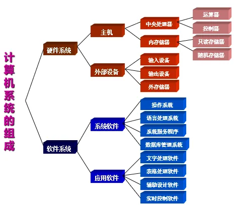
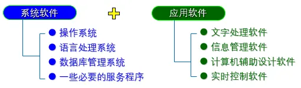
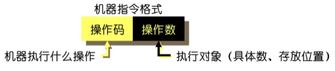
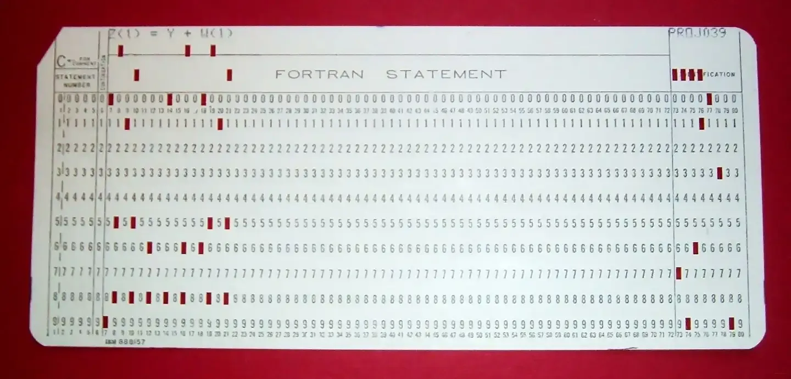
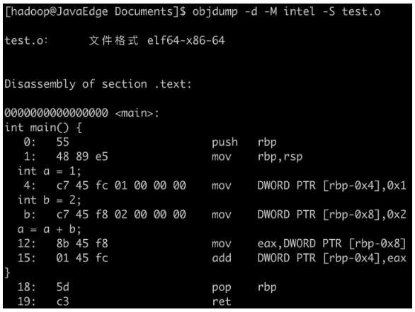
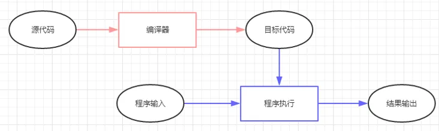
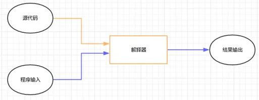
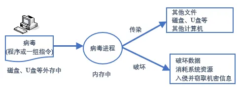

第3章 计算机软件和计算机语言
计算机软件

计算机软件是控制计算机实现用户需求的计算机操作以及管理计算机自身资源的指令集合，是指在硬件上运行的程序和相关的数据及文档，是计算机系统中不可缺少的主要组成部分。
计算机软件可分为两大部分：
- 系统软件
- 应用软件

系统软件
系统软件是计算机最基本的软件。它负责实现操作者对计算机最基本的操作，管理计算机的软件与硬件资源，具有通用性，主要由计算机厂家和软件公司开发提供。
系统软件主要包括：
- 操作系统
- 语言处理程序
- 数据库管理系统
- 服务程序
操作系统
操作系统用于控制和管理计算机的软硬件资源、合理安排计算机的工作流程，是 用户和计算机的接口。
教材列举的操作系统主要有：
- Windows
- UNIX
- Linux
- Mac OS
Windows
Windows 操作系统由微软公司开发，大多数用于台式电脑和笔记本电脑。
教材举例的个人电脑系统包括：
- Windows XP
- Windows 7
- Windows 10
教材还列举了适合服务器的 Windows Server 2000、Windows Server 2003。
UNIX
UNIX 是 20 世纪 70 年代初出现的操作系统。
除了作为网络操作系统之外，也可以作为单机操作系统使用，主要用于工程应用和科学计算等领域。教材注明其使用需要付费。
Linux
Linux 继承了 UNIX 的许多特性，而且开源免费，广泛用于商业领域的服务器。
教材列举的常见系列包括：
- Red Hat
- Ubuntu
- CentOS
- Debian
Mac OS
Mac OS 是苹果公司开发的操作系统，也是基于 UNIX 开发的，具有良好的用户体验、用户界面和较为简单的操作。
应用软件
应用软件是指系统软件以外的所有软件，是为解决实际问题所编写的软件的总称，涉及计算机应用的各个领域。
教材举例：
- 字表处理软件：Word、Excel
- 聊天软件：微信、QQ
- 网购软件：京东、淘宝、拼多多
操作系统常考概念
- 操作系统：控制和管理计算机系统的各种硬件和软件资源的使用。
- 中断：CPU 暂时停止当前程序的执行，转而执行处理新情况的过程。
计算机语言
程序和指令
- 指令：对计算机进行程序控制的最小单位。
- 所有指令的集合称为计算机的 指令系统。
- 程序：为完成一项特定任务而用某种语言编写的一组指令序列。

计算机语言分类
计算机语言通常分为三类：
- 机器语言
- 汇编语言
- 高级语言
机器语言
机器语言是计算机直接识别的语言，速度快。
机器语言使用二进制代码编写程序，因此又称 二进制语言，属于低级语言。
教材示例：用机器语言表示 8 + 4：
00001000 00000100 00000100
机器语言是其他计算机语言的基础。因为计算机硬件只能识别 0 和 1 的二进制，无论后面的计算机语言如何发展，最终在计算机内能够执行的都只能是二进制编码。
因此，其他计算机语言需要通过 编译器 或 解释器 转换成机器可以执行的形式。
机器语言特点：
- 优点：最底层、速度最快
- 缺点：最复杂、开发效率最低

汇编语言
汇编语言使用 助记符 代替操作码，用地址符号或标号代替地址码，即用符号代替机器语言中的二进制码。
汇编语言也称为 符号语言。
与机器语言相比，汇编语言是一种历史性的进步。尽管仍较复杂、容易出错，但它成为机器语言向更高级语言进化的桥梁。
教材示例：
MOV AL, 20H
含义：将 8 位数据 20H 传送到 AL 寄存器，本质上类似赋值操作。
用汇编语言编写的源程序不能被计算机直接识别，必须使用特定软件，将汇编源程序翻译和连接成计算机能够直接识别的二进制代码。
汇编语言特点：
- 优点：较底层、速度快
- 缺点：复杂、开发效率依然较低

高级语言
高级语言是一种接近人们使用习惯的程序设计语言。
高级语言所编写的程序不能直接被计算机识别，必须经过转换后才能执行。
按转换方式，教材分为两类：
编译类
事先准备一个称为 编译程序 的机器语言程序。当高级语言源程序输入计算机时，编译程序将 整个源程序 自动翻译成用机器指令表示的目标程序。

特点：
- 使用较方便
- 效率较高
- 源程序修改后需要重新编译
- 教材指出跨平台性较差
教材举例：
- C
- C++
- Delphi
- Pascal
- Fortran
解释类
事先准备一个称为 解释程序 的机器语言程序。当高级语言源程序输入计算机后，解释程序自动 逐句翻译 源程序，译一句执行一句。

特点：
- 使用效率相对较低
- 依赖解释器
- 教材指出跨平台性较好
教材举例：
- Python
- PHP
- ASP
- Ruby
- Java
教材总结：
编译的结果是另外一种语言，而解释的是一种中间语言。
高级语言的发展
教材将计算机高级语言的发展分为两个阶段，以 1980 年为分界线：
- 前一阶段：结构化语言或面向过程语言，如 C、Fortran
- 后一阶段：面向对象语言，如 C++、Java
面向对象语言的发展有两个方向：
- 纯面向对象语言：如 Smalltalk、EIFFEL
- 混合型面向对象语言：在过程式语言中加入类、继承等成分，如 C++、Objective-C
计算机病毒
计算机病毒概述
计算机病毒是隐藏在计算机系统中，利用系统资源进行繁殖并生存，能够影响计算机系统的正常运行，并可通过系统资源共享途径进行传染的程序。

简单地说，计算机病毒是一种特殊的、具有破坏作用的程序：
- 人为制造
- 具有传染性
- 属于软件范畴
当计算机运行时，源病毒能把自身精确地拷贝，或者有修改地拷贝到其他程序体内，影响正常程序的运行和破坏数据的正确性。
计算机病毒的特征
-
传染性
是计算机病毒的主要特征。病毒具有很强的再生能力，可以将自身复制品或变种通过内存、磁盘、网络等传染给其他文件、系统的某个部位或其他计算机。 -
破坏性
表现在修改和删除大量文件和数据、占用系统资源、使系统运行速度下降，甚至使系统无法运行或瘫痪。 -
隐蔽性
病毒进入系统后不易被发现，具有传染的隐蔽性和存在的隐蔽性。 -
潜伏性
病毒具有依附其他媒体而寄生的能力，入侵系统后可以不立即发作，潜伏几周、几个月甚至更长时间。 -
激发性
病毒具有一定的控制条件。当外界条件满足病毒发作条件时，病毒开始传染或破坏数据。
病毒分类
1. 文件型病毒
攻击对象是文件，并寄生在文件上，主要感染各类可执行文件。当文件被装载时，病毒程序运行。
2. 引导型病毒
主要传染磁盘上的系统引导区，把病毒程序加入或替代部分操作系统进行工作。系统一启动时病毒就被激活。
3. 网络病毒
随着网络发展出现的病毒。
教材描述其特点包括：
- 占用网络带宽
- 造成网络拥塞，甚至网络系统瘫痪
- 可通过网页浏览、邮件收发、文件下载传播
- 传播速度快
- 清除难度大
计算机病毒的来源
教材列举四类来源：
- 计算机专业人员或业余爱好者为恶作剧而编制的病毒
- 公司为保护自己的软件产品而编制的病毒
- 为达到某一目的、恶意攻击或摧毁计算机系统而编制的病毒
- 在研究、开发软件过程中，由于未估计到的原因而失去控制所产生的病毒
教材指出：前三种情况是人为故意所为，最后一种是人为无意所为。
病毒防治
病毒的防范
教材指出，计算机病毒的传播途径主要有：
- 网络
- U 盘
因此应以预防为主，堵塞病毒传播途径。

常用防范策略：
- 安装杀毒软件
- 安装个人防火墙
- 监控进出内部网络或计算机的信息
- 过滤不安全的服务
- 限制内部网络用户访问某些特殊站点
- 对网络访问进行记录和统计
- 个人密码设置尽可能复杂
病毒检测与消除
检测和消除病毒的方法主要有两种：
1. 人工检测和消除
由计算机专业人员进行，可以通过找出有病毒的内容并删除，或使用正确内容覆盖来消除病毒。
特点：
- 难度大
- 技术复杂
2. 软件检测和消除
使用杀毒软件进行检测和消除。
教材举例：瑞星、360 等。
特点：
- 操作简单
- 使用方便
- 适用于一般计算机用户
教材还提到，可以通过对磁盘进行格式化来消除病毒。但采用此方法时，磁盘上的信息也会同时被消除，因此应慎重使用。
保护知识产权
教材引用《计算机软件保护条例》。
- 最早的《计算机软件保护条例》由国务院于 1991 年 6 月 4 日发布，教材注明该版本现已废止。
- 教材记载：现公布《计算机软件保护条例》，自 2002 年 1 月 1 日起实施。
软件著作权
教材列举第二章第八条所述软件著作权人的权利：
- 发表权
- 署名权
- 修改权
- 复制权
- 发行权
- 出租权
- 信息网络传播权
- 翻译权
- 应当由软件著作权人享有的其他权利
随堂检测
单项选择题
1. 以下不是微软公司出品的软件是（ ）。
- A. PowerPoint
- B. Word
- C. Excel
- D. Acrobat Reader
查看答案
答案：D
2. 操作系统的作用是（ ）。
- A. 把源程序译成目标程序
- B. 便于进行数据管理
- C. 控制和管理系统资源
- D. 实现硬件之间的连接
查看答案
答案：C
3. 所谓“中断”是指（ ）。
- A. 操作系统随意停止一个程序的运行
- B. 当出现需要时，CPU 暂时停止当前程序的执行，转而执行处理新情况的过程
- C. 因停机而停止一个程序的运行
- D. 电脑死机
查看答案
答案：B
4. 下列对操作系统功能的描述最为完整的是（ ）。
- A. 负责外设与主机之间的信息交换
- B. 负责诊断机器的故障
- C. 控制和管理计算机系统的各种硬件和软件资源的使用
- D. 将源程序编译成目标程序
查看答案
答案：C
5. CPU、存储器、I/O 设备是通过（ ）连接起来的。
- A. 接口
- B. 总线
- C. 控制线
- D. 系统文件
查看答案
答案：B
6. 在 Windows 资源管理器中，用鼠标右键单击一个文件时，会出现一个名为“复制”的操作选项，它的意思是（ ）。
- A. 用剪切板中的文件替换该文件
- B. 在该文件所在文件夹中，将该文件克隆一份
- C. 将该文件复制到剪切板，并保留原文件
- D. 将该文件复制到剪切板，并删除原文件
查看答案
答案：C
7. 下列属于解释执行的程序设计语言是（ ）。
- A. C
- B. C++
- C. Pascal
- D. Python
查看答案
答案：D
8. 下列不属于面向对象程序设计语言的是（ ）。
- A. C
- B. C++
- C. Java
- D. C#
查看答案
答案：A
9. 关于汇编语言，下列说法错误的是（ ）。
- A. 是一种与具体硬件相关的程序设计语言
- B. 在编写复杂程序时，相对于高级语言而言代码量较大，且不易调试
- C. 可以直接访问寄存器、内存单元以及 I/O 端口
- D. 随着高级语言的诞生，如今已完全被淘汰，不再使用
查看答案
答案：D
10. Pascal 语言、C 语言和 C++ 语言都属于（ ）。
- A. 面向对象语言
- B. 脚本语言
- C. 解释性语言
- D. 编译性语言
查看答案
答案：D
11. 在下列关于计算机语言的说法中，正确的有（ ）。
- A. 高级语言比汇编语言更高级，是因为它的程序运行效率更高
- B. 随着 Pascal、C 等高级语言的出现，机器语言和汇编语言已经退出了历史舞台
- C. 高级语言程序比汇编语言程序更容易从一种计算机移植到另一种计算机上
- D. C 是一种面向对象的高级计算机语言
查看答案
答案：C
12. 编译器的主要功能是（ ）。
- A. 将源程序翻译成机器指令代码
- B. 将源程序重新组合
- C. 将低级语言翻译成高级语言
- D. 将一种高级语言翻译成另一种高级语言
查看答案
答案：A
13. 计算机病毒是（ ）。
- A. 通过计算机传播的危害人体健康的一种病毒
- B. 人为制造的能够侵入计算机系统并给计算机带来故障的程序或指令集合
- C. 一种由于计算机元器件老化而产生的对生态环境有害的物质
- D. 利用计算机的海量高速运算能力而研制出来的用于疾病预防的新型病毒
查看答案
答案：B
14. 在计算机中，防火墙的作用是（ ）。
- A. 防止火灾蔓延
- B. 防止网络攻击
- C. 防止计算机死机
- D. 防止使用者误删除数据
查看答案
答案：B
15. 计算机病毒的特点是（ ）。
- A. 传播性、潜伏性、易读性与隐蔽性
- B. 破坏性、传播性、潜伏性与安全性
- C. 传播性、潜伏性、破坏性与隐蔽性
- D. 传播性、潜伏性、破坏性与易读性
查看答案
答案：C